Lektion 01
Die parallele Moll-Pentatonik nutzt dieselben Töne.
Die parallele Moll-Pentatonik verwendet genau dieselben Töne wie die Dur-Pentatonik. Der Unterschied ist, welcher Ton sich wie der Ruhe- und Grundton anfühlt: In Dur ist es die Dur-1, in Moll die Moll-1.
Die parallele Moll-Tonart liegt eine kleine Terz unter der Dur-Tonart. Umgekehrt liegt die parallele Dur-Tonart eine kleine Terz über der Moll-Tonart.
Beispiel: C-Dur und A-Moll
C-Dur-Pentatonik: C · D · E · G · A
A-Moll-Pentatonik: A · C · D · E · G
Beide Tonleitern enthalten dieselben fünf Töne. Je nachdem, ob C oder A als Grundton gehört wird, klingt und funktioniert das Material als Dur oder Moll.
Moll-Pentatonik: Sie enthält die Tonstufen 1, ♭3, 4, 5 und ♭7 der Molltonleiter. In A-Moll sind das A, C, D, E und G.
Lektion 02
Dieselben Formen bekommen einen anderen Bezugspunkt.
Bei den parallelen Dur- und Moll-Pentatoniken verschieben sich die Namen der fünf Positionen zyklisch:
| Dur-Bezug | Moll-Bezug |
|---|---|
| Dur-Position 1 | Moll-Position 2 |
| Dur-Position 2 | Moll-Position 3 |
| Dur-Position 3 | Moll-Position 4 |
| Dur-Position 4 | Moll-Position 5 |
| Dur-Position 5 | Moll-Position 1 |
Also: Die Moll-1 liegt in unserer Zählweise in der fünften Dur-Position. Die Dur-1 liegt in der zweiten Moll-Position. Finde zuerst den Grundton auf der tiefen E-Saite und entscheide dann, ob du Dur oder Moll als Bezug nimmst.
Die fünf Positionen auf dem ganzen Griffbrett
Hier siehst du die C-Dur-Pentatonik bis zum fünfzehnten Bund. C und A sind jeweils mit ihrer festen Tonfarbe markiert: C rot, A violett. Die Leisten zeigen die fünf Dur-Positionen und darunter die fünf Moll-Positionen. Moll-Position 1 beginnt beim A auf der tiefen E-Saite; sie entspricht Dur-Position 5. Benachbarte Positionen überlappen sich.

Zum Abschluss · Griffbrett und Stimmung
Warum das Muster an der B-Saite verschoben ist.
Die Gitarre ist in der üblichen Standardstimmung von tief nach hoch auf E–A–D–G–B–E gestimmt. Fast alle benachbarten Saiten liegen eine reine Quarte auseinander. Zwischen G- und B-Saite liegt dagegen eine große Terz: vier statt fünf Halbtöne.
Wäre auch die B-Saite im Quartabstand gestimmt, läge sie einen Halbton höher. Weil sie tatsächlich einen Halbton tiefer gestimmt ist, muss ein Griff beim Übergang von der G- auf die B-Saite um einen Bund in Richtung Korpus verschoben werden, damit die Tonabstände gleich bleiben. Die Tonfolge und ihre Abstände ändern sich also nicht; nur die Lage der Töne auf dem Griffbrett passt sich der Stimmung an.
Am Muster aus Lektion 4
Auf der G-Saite liegt G im zwölften Bund. Das A, das zwei Halbtöne darüber liegt, befindet sich auf der B-Saite im zehnten Bund. Bei einer gleichmäßigen Quartstimmung läge es dort einen Bund tiefer. Die zusätzliche Verschiebung gleicht die abweichende Stimmung zwischen G- und B-Saite aus.
Diese Stimmung ist ein praktischer Kompromiss: Sie ermöglicht viele Akkordgriffe und Voicings, die wir regelmäßig verwenden, darunter vertraute offene Dur-Akkorde. Deshalb ist die Standardstimmung für das Greifen von Akkorden besonders vielseitig.
Wenn du von einer Saite auf die B-Saite wechselst, prüfe deshalb immer, ob sich das Griffmuster um einen Bund verschiebt. So bleibt die musikalische Beziehung gleich, obwohl die Form auf dem Griffbrett anders aussieht.